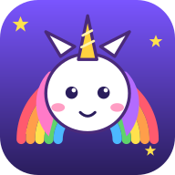

No adsNo trackingNo accountsNo data collected
Last updated: 27 October 2026
Unicorn Racers is a free game for children, made by Gerard Halligan. It is designed so that it needs nothing from you or your child except a screen to play on.
Nothing. Unicorn Racers does not collect, store on a server, share or sell any personal information. There is no sign-up, no login, no account, no email address, no name, no location, no contacts, no photos, no microphone or camera use, and no advertising ID.
There are no ads and no in-app purchases. There are no analytics, trackers, cookies for tracking, or third-party code. The game does not send any information about you or how you play to anyone.
To remember where you were, the game saves your choices such as the elf and unicorn you picked, sound on or off, the graphics quality, and your personal best race times and records. This is stored only on your own device (in the app's local storage). It never leaves your device, and we cannot see it. The game files may be kept on your device so the game can open quickly and show a friendly screen when you are offline.
You can delete everything at any time by clearing the app's storage in your device settings (Settings → Apps → Unicorn Racers → Storage → Clear storage), or by uninstalling the app.
Unicorn Racers is made for children, including young children, and follows the principle of collecting no data at all. Because nothing is collected, there is nothing to share with third parties. There are no links, chat, or social features in the game.
If this policy ever changes, the new version will be published on this page with a new date.
Questions? Contact Gerard Halligan at accounts@mikai.ai.